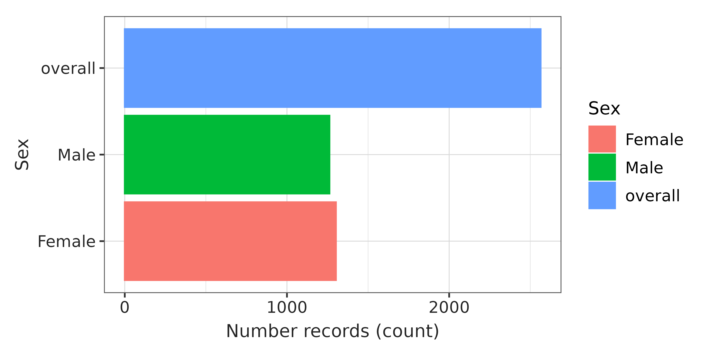
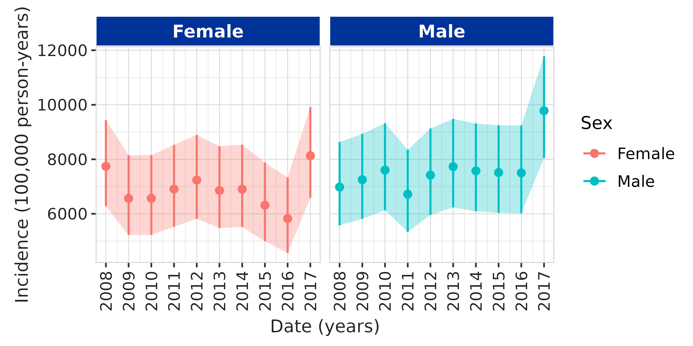
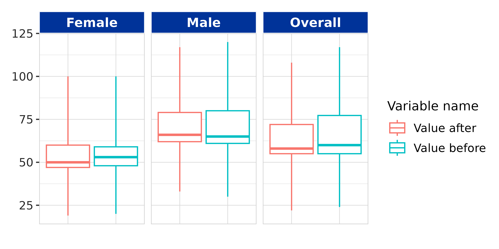

visOmopResults supports table and plot creation functions that can be used to generate publication-ready figures and tables. As an example, in this vignette we show how to create tables and figures for a DARWIN-EU study report.
Quarto document settings
In the header of the Quarto document, we can set a title to identify the study and the document. Additionally, we can point to a Word document containing the template styles for DARWIN reports. The DOCX template can be found here, together with the Quarto script used to generate the report.
A Quarto header for producing a Word report might look like this:
---
title: "DARWIN-EU PX-CY-Z: Tables and Figures"
format:
docx:
reference-doc: inst/darwinReportRef.docx
fig-cap-location: top
execute:
echo: false
message: false
warning: false
---Next, we use the first R chunk to load packages, load data, and set
options/variables used across the script. The results we use are
obtained from mock data created with the
IncidencePrevalence and CohortCharacteristics
packages, which we have stored in the [inst](https://github.com/darwin-eu/visOmopResults/tree/main/inst)
folder of the packge.
# Load necessary packages ----
library(visOmopResults)
library(IncidencePrevalence)
library(CohortCharacteristics)
library(dplyr)
library(tidyr)
library(ggplot2)
# Load mock results stored in the package ----
data <- visOmopResults::data
# Global options ----
knitr::opts_chunk$set(
out.width = "95%", # figures occupy ~95% of document width
out.height = "auto",
dpi = 320, # ensure figure quality
fig.width = 6, # default aspect ratio (can be overridden per-figure)
fig.height = 3,
results = "asis" # enable Markdown produced via cat() inside chunks
)
# DARWIN style for visOmopResults plots and tables.
style <- "darwin"
tableType <- "flextable"
plotType <- "ggplot"
setGlobalPlotOptions(style = style, type = plotType)
setGlobalTableOptions(style = style, type = tableType)To use the Calibri font family for plots you will need to have the font installed, and for Windows registered in R graphics. See vignette on styles.
For tables we choose the "flextable" type because it
transfers best to Word documents. To use the Calibri font family for
plots you will need to have the font installed. See vignette on
styles.
Characterisation results
The report starts with a table showing baseline characteristics of the denominator cohort in our mock study.
data$summarised_characteristics |>
dplyr::filter(variable_name != "Sex") |>
tableCharacteristics(
header = c("sex"),
hide = c("cdm_name", "cohort_name", "table_name"),
type = tableType,
style = style
)Variable name |
Variable level |
Estimate name |
Sex |
||
|---|---|---|---|---|---|
overall |
Female |
Male |
|||
Number records |
– |
N |
2,564 |
1,302 |
1,262 |
Number subjects |
– |
N |
2,564 |
1,302 |
1,262 |
Cohort start date |
– |
Median [Q25 - Q75] |
2008-01-01 [2008-01-01 - 2008-01-01] |
2008-01-01 [2008-01-01 - 2008-01-01] |
2008-01-01 [2008-01-01 - 2008-01-01] |
Range |
2008-01-01 to 2008-01-01 |
2008-01-01 to 2008-01-01 |
2008-01-01 to 2008-01-01 |
||
Cohort end date |
– |
Median [Q25 - Q75] |
2018-01-01 [2018-01-01 - 2018-01-01] |
2018-01-01 [2018-01-01 - 2018-01-01] |
2018-01-01 [2018-01-01 - 2018-01-01] |
Range |
2008-01-17 to 2018-01-01 |
2008-01-17 to 2018-01-01 |
2009-03-24 to 2018-01-01 |
||
Age |
– |
Median [Q25 - Q75] |
46 [36 - 56] |
45 [36 - 55] |
46 [37 - 56] |
Mean (SD) |
47.54 (14.81) |
47.52 (15.21) |
47.57 (14.40) |
||
Range |
21 to 99 |
21 to 99 |
21 to 98 |
||
Prior observation |
– |
Median [Q25 - Q75] |
16,834 [13,477 - 20,588] |
16,734 [13,320 - 20,410] |
16,932 [13,636 - 20,634] |
Mean (SD) |
17,545.28 (5,406.72) |
17,535.78 (5,551.58) |
17,555.07 (5,255.26) |
||
Range |
7,729 to 36,260 |
7,929 to 36,260 |
7,729 to 36,115 |
||
Future observation |
– |
Median [Q25 - Q75] |
4,010 [3,891 - 4,117] |
4,018 [3,900 - 4,118] |
4,005 [3,878 - 4,116] |
Mean (SD) |
3,924.53 (418.47) |
3,937.65 (405.74) |
3,910.98 (430.96) |
||
Range |
16 to 4,201 |
16 to 4,199 |
448 to 4,201 |
||
Days in cohort |
– |
Median [Q25 - Q75] |
3,654 [3,654 - 3,654] |
3,654 [3,654 - 3,654] |
3,654 [3,654 - 3,654] |
Mean (SD) |
3,594.61 (332.90) |
3,601.79 (324.60) |
3,587.20 (341.22) |
||
Range |
17 to 3,654 |
17 to 3,654 |
449 to 3,654 |
||
Comorbidities flag -inf to 0 |
Hiv |
N (%) |
475 (18.53%) |
245 (18.82%) |
230 (18.23%) |
Depression |
N (%) |
2,531 (98.71%) |
1,285 (98.69%) |
1,246 (98.73%) |
|
Asthma |
N (%) |
1,234 (48.13%) |
623 (47.85%) |
611 (48.42%) |
|
Comedications flag -180 to 0 |
Antidiabetes |
N (%) |
26 (1.01%) |
11 (0.84%) |
15 (1.19%) |
Opioids |
N (%) |
49 (1.91%) |
27 (2.07%) |
22 (1.74%) |
|
If the default order of variable names provided by
tableCharacteristics() does not match the study
requirements, we can create a customised table with this package.
data$summarised_characteristics |>
dplyr::filter(variable_name != "Sex") |>
dplyr::mutate(
variable_name = customiseText(
variable_name,
custom = c(
"Comorbidities" = "Comorbidities flag -inf to 0",
"Comedications" = "Comedications flag -180 to 0"
)
),
variable_level = customiseText(
variable_level,
custom = c("HIV" = "Hiv")
)
) |>
visOmopTable(
header = c("sex"),
estimateName = c(
"N (%)" = "<count> (<percentage>%)",
"N" = "<count>",
"Median [Q25 - Q75]" = "<median> [<q25> - <q75>]",
"Mean (SD)" = "<mean> (<sd>)",
"Range" = "<min> to <max>"
),
factor = list(
"sex" = c("overall", "Male", "Female"),
"variable_name" = c(
"Number records", "Number subjects", "Age", "Days in cohort", "Prior observation",
"Future observation", "Cohort start date", "Cohort end date",
"Comedications", "Comorbidities"
),
"variable_level" = c(NA, "Asthma", "Depression", "HIV", "Opioids", "Antidiabetes")
),
hide = c("cdm_name", "cohort_name")
)Variable name |
Variable level |
Estimate name |
Sex |
||
|---|---|---|---|---|---|
overall |
Male |
Female |
|||
Number records |
– |
N |
2,564 |
1,262 |
1,302 |
Number subjects |
– |
N |
2,564 |
1,262 |
1,302 |
Age |
– |
Median [Q25 - Q75] |
46 [36 - 56] |
46 [37 - 56] |
45 [36 - 55] |
Mean (SD) |
47.54 (14.81) |
47.57 (14.40) |
47.52 (15.21) |
||
Range |
21 to 99 |
21 to 98 |
21 to 99 |
||
Days in cohort |
– |
Median [Q25 - Q75] |
3,654 [3,654 - 3,654] |
3,654 [3,654 - 3,654] |
3,654 [3,654 - 3,654] |
Mean (SD) |
3,594.61 (332.90) |
3,587.20 (341.22) |
3,601.79 (324.60) |
||
Range |
17 to 3,654 |
449 to 3,654 |
17 to 3,654 |
||
Prior observation |
– |
Median [Q25 - Q75] |
16,834 [13,477 - 20,588] |
16,932 [13,636 - 20,634] |
16,734 [13,320 - 20,410] |
Mean (SD) |
17,545.28 (5,406.72) |
17,555.07 (5,255.26) |
17,535.78 (5,551.58) |
||
Range |
7,729 to 36,260 |
7,729 to 36,115 |
7,929 to 36,260 |
||
Future observation |
– |
Median [Q25 - Q75] |
4,010 [3,891 - 4,117] |
4,005 [3,878 - 4,116] |
4,018 [3,900 - 4,118] |
Mean (SD) |
3,924.53 (418.47) |
3,910.98 (430.96) |
3,937.65 (405.74) |
||
Range |
16 to 4,201 |
448 to 4,201 |
16 to 4,199 |
||
Cohort start date |
– |
Median [Q25 - Q75] |
2008-01-01 [2008-01-01 - 2008-01-01] |
2008-01-01 [2008-01-01 - 2008-01-01] |
2008-01-01 [2008-01-01 - 2008-01-01] |
Range |
2008-01-01 to 2008-01-01 |
2008-01-01 to 2008-01-01 |
2008-01-01 to 2008-01-01 |
||
Cohort end date |
– |
Median [Q25 - Q75] |
2018-01-01 [2018-01-01 - 2018-01-01] |
2018-01-01 [2018-01-01 - 2018-01-01] |
2018-01-01 [2018-01-01 - 2018-01-01] |
Range |
2008-01-17 to 2018-01-01 |
2009-03-24 to 2018-01-01 |
2008-01-17 to 2018-01-01 |
||
Comedications |
Opioids |
N (%) |
49 (1.91%) |
22 (1.74%) |
27 (2.07%) |
Antidiabetes |
N (%) |
26 (1.01%) |
15 (1.19%) |
11 (0.84%) |
|
Comorbidities |
Asthma |
N (%) |
1,234 (48.13%) |
611 (48.42%) |
623 (47.85%) |
Depression |
N (%) |
2,531 (98.71%) |
1,246 (98.73%) |
1,285 (98.69%) |
|
HIV |
N (%) |
475 (18.53%) |
230 (18.23%) |
245 (18.82%) |
|
Additionally, we can show the number of people in the overall cohort
and stratified by sex. We use the CohortCharacteristics
plotting function and then apply the DARWIN style and rotate the axis
labels.
data$summarised_characteristics |>
dplyr::filter(variable_name %in% c("Number records")) |>
plotCharacteristics(colour = "sex") +
themeVisOmop(style = style) +
coord_flip()
Incidence results
For the incidence results, we want to plot incidence over time by sex
group. We can do that with the plotting functions in
IncidencePrevalence. We add the "darwin"
style and rotate x-axis labels for readability.
data$incidence |>
dplyr::filter(strata_name == "sex") |>
plotIncidence(colour = "sex", facet = "sex", ribbon = TRUE) +
themeVisOmop(style = style) +
theme(axis.text.x = element_text(angle = 90, vjust = 0.5, hjust = 1))
Additional results
Sometimes a study includes an analysis not yet supported by the OMOP
Tidy R packages. In that case, we might or might not convert our result
to a summarised_result, either way, there will be no
package-specific table or plot function.
For these cases, we can use visOmopResults to create styled tables and plots that match the rest of the report.
As an example, we have mock results for a measurement change after an intervention. The tibble looks like this:
data$measurement_change
#> # A tibble: 9 × 8
#> cohort_name sex variable_name median min max q25 q75
#> <chr> <chr> <chr> <dbl> <dbl> <dbl> <dbl> <dbl>
#> 1 denominator overall value_before 60 24 117 55 77.2
#> 2 denominator overall value_after 58 22 108 55 72
#> 3 denominator overall change_in_value -2 -2 -9 0 -5.25
#> 4 denominator male value_before 65 30 120 61 80
#> 5 denominator male value_after 66 33 117 62 79
#> 6 denominator male change_in_value 1 3 -3 1 -1
#> 7 denominator female value_before 53 20 100 48 59
#> 8 denominator female value_after 50 19 100 47 60
#> 9 denominator female change_in_value -3 -1 0 -1 1First, we display results in a table. We pivot to the standard
columns estimate_name, estimate_type, and
estimate_value; this lets us format estimates and use the
header argument in the visTable()
function.
data$measurement_change |>
tidyr::pivot_longer(
cols = c("median", "min", "max", "q25", "q75"),
names_to = "estimate_name",
values_to = "estimate_value"
) |>
dplyr::mutate(
estimate_type = "numeric",
estimate_value = as.character(estimate_value),
variable_name = customiseText(variable_name),
sex = customiseText(sex)
) |>
visTable(
header = "sex",
estimateName = c(
"Median [Q25 - Q75]" = "<median> [<q25> - <q75>]",
"Range" = "<min> to <max>"
),
hide = c("cohort_name", "estimate_type"),
rename = c("Estimate" = "estimate_name", "Variable" = "variable_name")
)Variable |
Estimate |
Sex |
||
|---|---|---|---|---|
Overall |
Male |
Female |
||
Value before |
Median [Q25 - Q75] |
60.00 [55.00 - 77.25] |
65.00 [61.00 - 80.00] |
53.00 [48.00 - 59.00] |
Range |
24.00 to 117.00 |
30.00 to 120.00 |
20.00 to 100.00 |
|
Value after |
Median [Q25 - Q75] |
58.00 [55.00 - 72.00] |
66.00 [62.00 - 79.00] |
50.00 [47.00 - 60.00] |
Range |
22.00 to 108.00 |
33.00 to 117.00 |
19.00 to 100.00 |
|
Change in value |
Median [Q25 - Q75] |
-2.00 [0.00 - -5.25] |
1.00 [1.00 - -1.00] |
-3.00 [-1.00 - 1.00] |
Range |
-2.00 to -9.00 |
3.00 to -3.00 |
-1.00 to 0.00 |
|
Additionally, we can visualise values before and after in a boxplot:
data$measurement_change |>
dplyr::filter(variable_name %in% c("value_before", "value_after")) |>
dplyr::mutate(
variable_name = customiseText(variable_name),
sex = customiseText(sex)
) |>
boxPlot(x = "variable_name", facet = "sex", colour = "variable_name") +
theme(axis.text.x = element_blank(), axis.ticks.x = element_blank()) +
xlab("")
Note that we did not specify type or style
in the visOmopResults functions above because we set
these globally at the beginning of the document.
Captions and footers
In Markdown
In the reference Word document, styles are defined for figure legends
(Caption) and footers (FigureFooter). These
can be used in Quarto as follows:
In an R code chunk
We might want to create captions and footers inside an R code chunk
(e.g., when generating multiple tables/figures in a loop, or when
programmatically numbering them). In those cases, we can use
cat() within a chunk:
num_table <- 1
cat(paste0(
':::{custom-style="Caption"}\n',
'**Table ', num_table, ':** Baseline population characteristics.\n',
':::\n'
))
num_table <- num_table + 1It’s important that we use the chunk option
results = 'asis' so that the content produced by
cat() is correctly interpreted by Quarto/Pandoc as
Markdown.
Report example
You can access an example Quarto script and the reference DOCX document here.